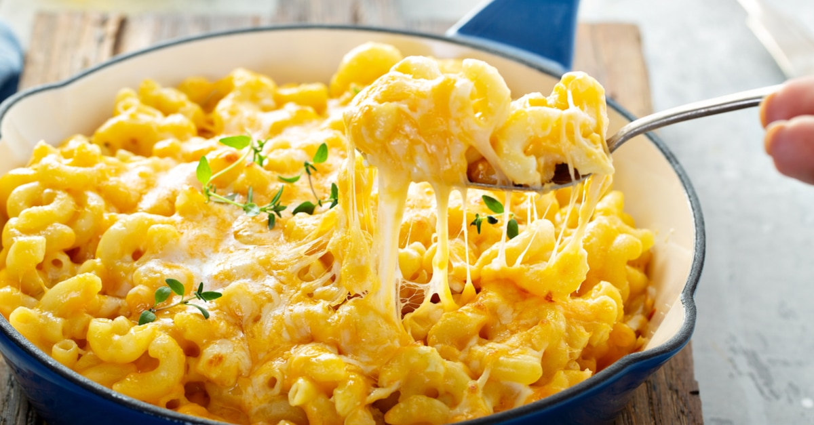

Mac and Cheese

This is an easy and great mac and cheese recipe that can scale well for small dinners and large holiday gatherings. This recipe tugs on some
southern practices to create a creamy and savory mac.
Ingredients
- 1 lb macaroni noodles
- 8 oz mozzarella, cubed
- 4 oz gouda, shredded
- 8 oz sharp cheddar, shredded
- 2 oz parmesan, grated
- 3 eggs
- 4 oz yellow cheddar, shredded
- 4 oz white cheddar, shredded
- 12 oz evaporated milk
Steps
- Start by cooking 1 lb of macaroni pasta in water.
- Then shred 8 ounces of sharp cheddar, cube 8 ounces of mozzarella, and shred 4 ounces of smoked gouda.
- Once the macaroni is cooked, drained, and returned to the warm pot.
Add in the sharp cheddar, stirring into the past while adding 12 ounces of evaporated milk and mix together.
- After the cheese has melted and the pasta is creamy and cheesy, add in the smoked gouda and mozzarella then mix together until evenly distributed.
- Once the pasta has cooled enough to stick a finger without being burnt, put in 3 large eggs - whisking together vigorously until the eggs are nice and smooth.
- Place into a casserole dish, smooth it all out then cover/sprinkle on top with 4 ounces of shredded yellow and white cheddar cheese along with the 2 oz of grated parmesan.
- After the cheese is evenly coated on top, place the casserole dish into a 375°F oven for about 45 minutes until golden brown.
- Let rest for 10 minutes before serving.